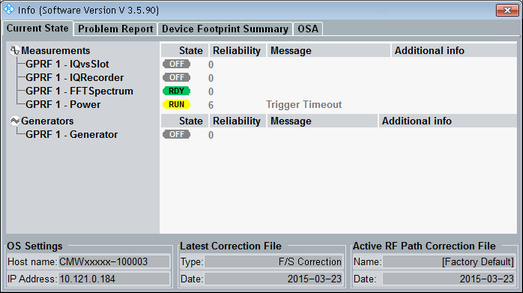

The "Current State" tab provides information concerning the current state of all installed firmware applications. At the bottom, it displays the most important address settings for remote control and information related to calibration and RF path correction.

State of the firmware application, see "System Overview".
The reliability indicator describes the validity of measurement results and the possible source of inaccuracies or errors.
The displayed reliability value indicates the most severe error that has been detected by an application since it has been started or switched on. A measurement returns this value also when measurement results are queried via remote control command. When an application is stopped or switched off, the available error information is kept. When it is restarted or switched on again, the "old" error information is deleted.
To display all errors detected by an application, not only the most severe one, select the application on the left and press the hotkey "Reliability List" at the bottom.
A zero in column "Reliability" indicates that no error has been detected. A detected error is indicated via a non-zero value in column "Reliability" and a text in column "Message". Additional information like a file name or an option can be indicated in the last column.
For a description of all reliability indicator values, refer to "Reliability Indicator".
Displays the most important address settings for remote control. For configuration, see "System Settings".
Displays the type and date of the last correction of the instrument. Remote commands allow you also to query information about previous corrections.
- "F/S Correction": Correction performed in factory or service
- "TPM Correction": Correction performed by the customer (third-party maintenance)
- "Calibration": Verification in the factory
- "Outgoing Calibration": Verification by the service
Displays the name and creation date/time of the currently active RF path correction file.
Remote command: